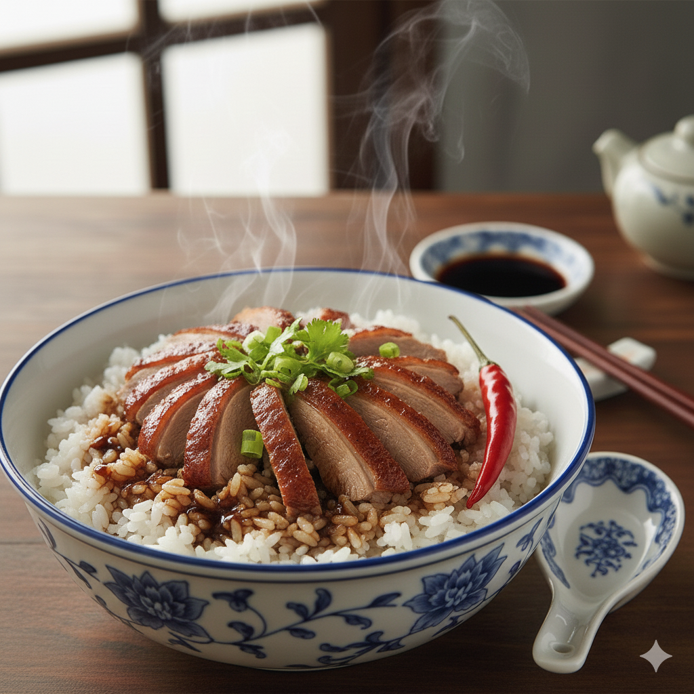

← 回到首頁
2. 鴨肉飯

【歷史故事】
高雄的鴨肉店密度居全台之冠。早期農村社會物資匱乏，鴨肉被視為滋補珍品。高雄的鴨肉飯特色在於「物盡其用」，將薰鴨或白斬鴨切片後，剩下的鴨骨架熬湯，鴨油則製成靈魂醬汁。這種鹹香帶甜的滋味，完美體現了南部港都的熱情與豪邁。
【需要材料】
- 熟鴨肉（煙燻或白斬） 適量
- 白飯 1 碗
- 鴨油（或紅蔥頭油） 2 大勺
- 醬汁：醬油、糖、五香粉、鴨湯
- 配菜：醃黃瓜、薑片
【料理方法】
- 將熟鴨肉去骨後切成薄片或絲備用。
- 製作醬汁：將鴨油加熱，炒香紅蔥酥，加入醬油、少許糖與鴨湯熬煮至濃縮。
- 將白飯盛入碗中，鋪上鴨肉片。
- 淋上熱騰騰的鴨油醬汁，旁邊附上兩片酸甜的醃黃瓜解膩即可。